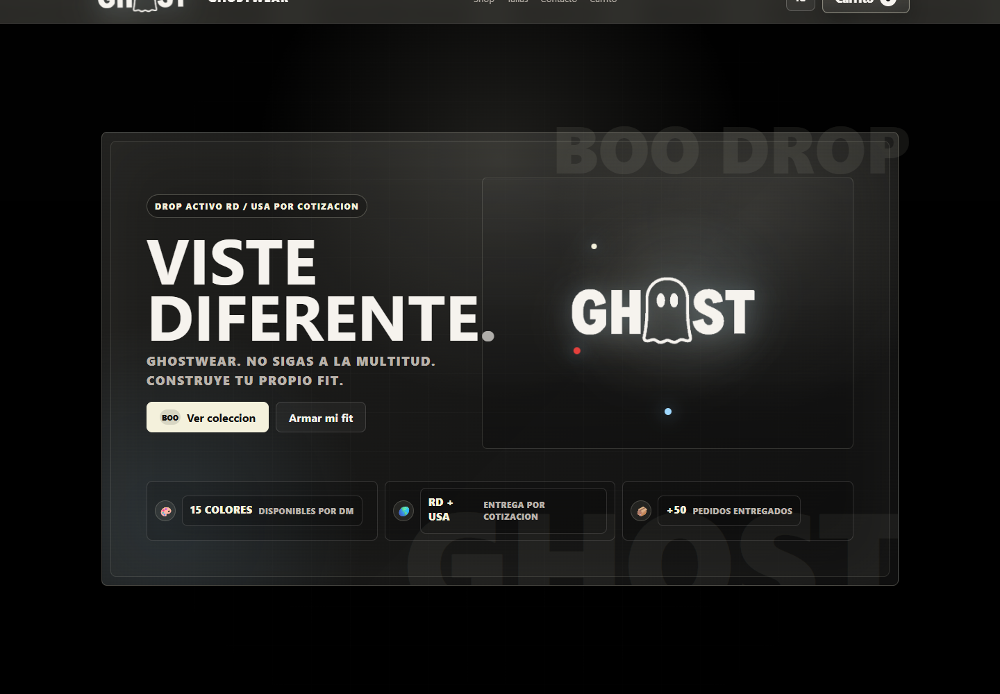
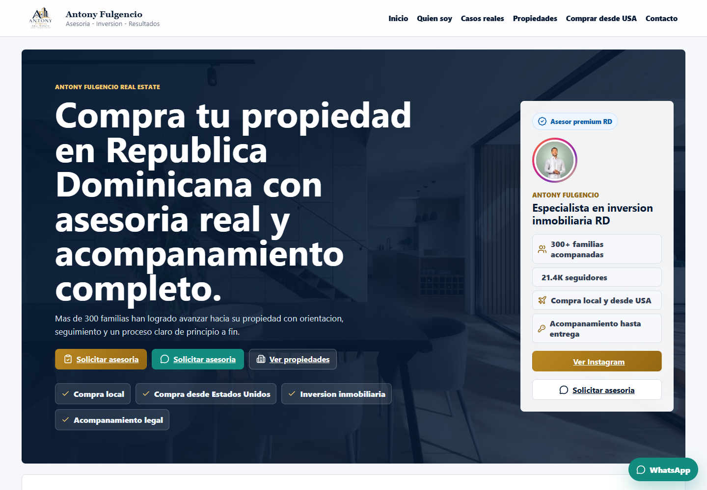
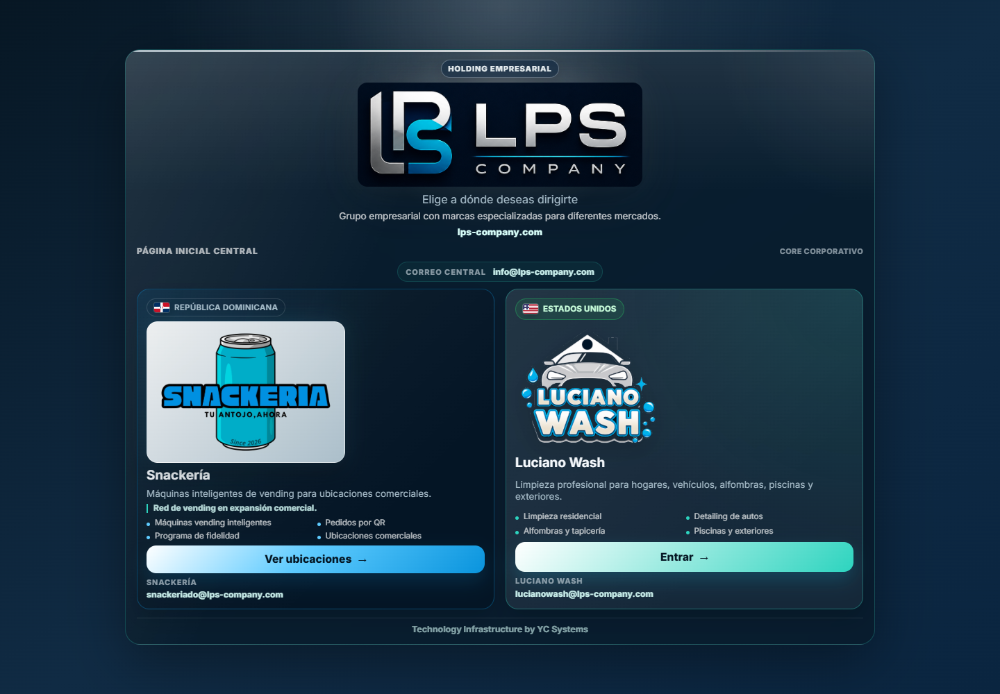
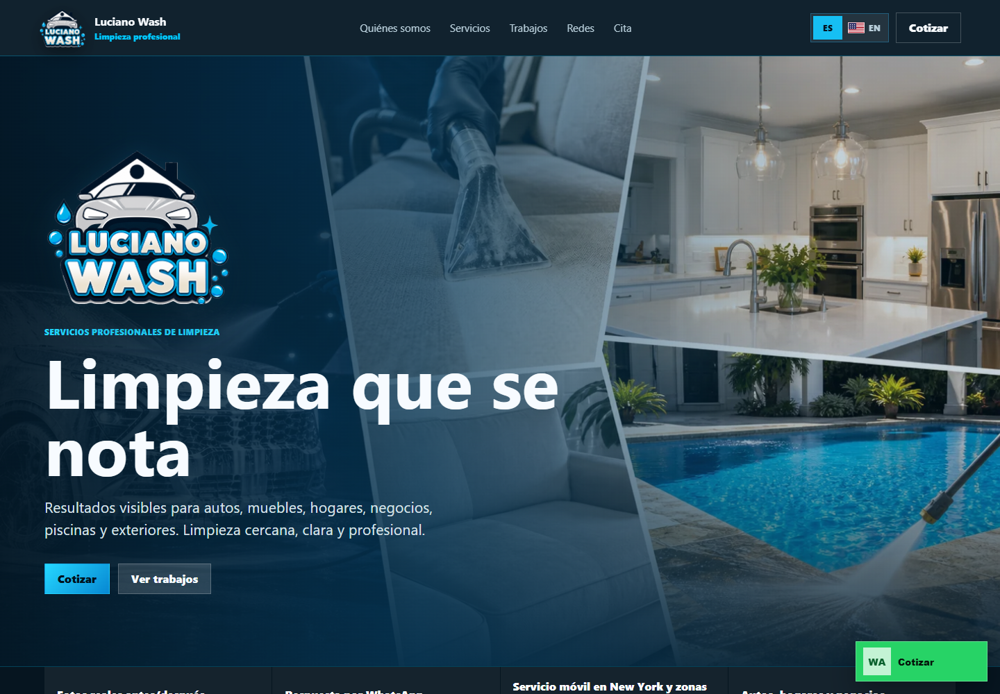
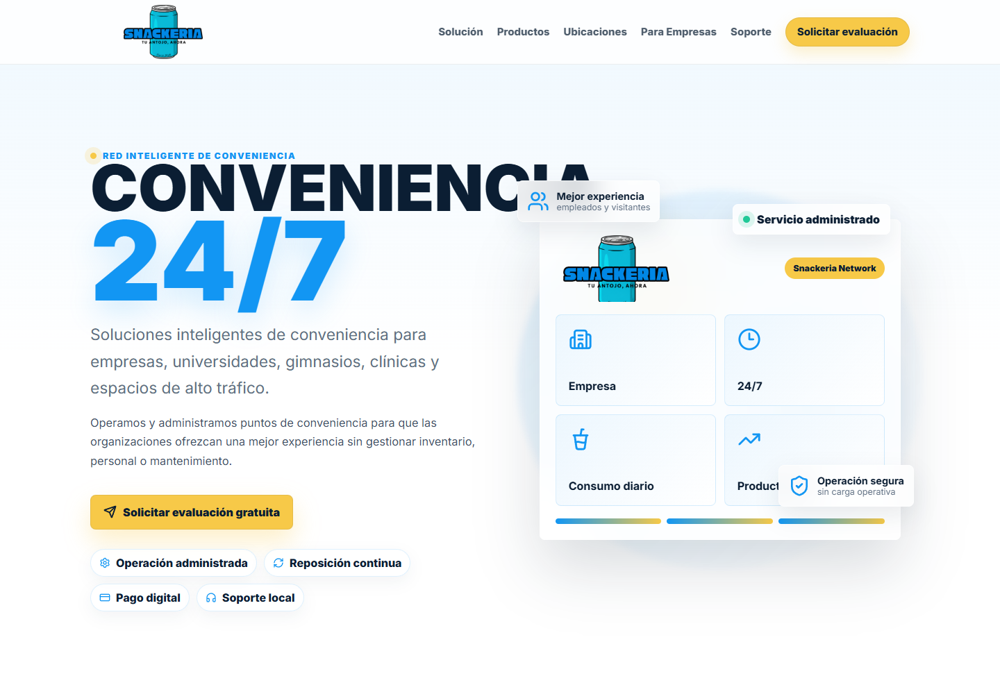

Qué fricción, desorden o falta de confianza tenía la marca antes de construir.
YC Systems / Casos de cliente
Prueba de trabajo
Casos de cliente con sitios activos y resultados visibles
No mezclamos productos propios con proyectos de clientes. Esta sección muestra ejecución verificable: dominios activos, flujos publicados y negocios reales.



Formato de caso
Cada proyecto demuestra una necesidad, una solución y una base lista para crecer
Leemos cada entrega como evidencia comercial: sitio activo, dominio propio, contacto directo, flujo claro, experiencia móvil y proyecto verificable.
Qué experiencia, flujo o sistema quedó publicado para operar con más claridad.
Qué mejora comercial se logra: vender, captar, explicar, operar o medir mejor.
Qué base queda lista para crecer: dominio, catálogo, CRM, pagos, dashboard o automatización.
Casos de cliente
Ejecución visible, no solo promesas
Estos proyectos muestran presencia comercial, venta, contacto, marca y operación lista para clientes reales.
E-commerce activo
GhostWear
Problema: una marca de ropa necesitaba vender productos sin depender de mensajes sueltos.
Solución: catálogo, carrito, experiencia móvil y pedidos por WhatsApp.
Resultado: tienda activa lista para campañas y ventas directas.
Entregable: web, catálogo, flujo de pedido, dominio y contacto comercial.
Ver sitio activoBienes raíces
Antony Real Estate
Problema: un perfil inmobiliario necesitaba autoridad, confianza y contacto rápido.
Solución: presencia digital profesional con enfoque comercial, servicios y CTA móvil.
Resultado: base pública más seria para captar prospectos y presentar propiedades.
Entregable: sitio corporativo, marca personal, contacto directo y estructura para crecer.
Ver sitio activoCorporativo
LPS Company
Problema: una empresa necesitaba organizar su presencia, servicios y marcas asociadas.
Solución: sitio corporativo con estructura clara, información institucional y enlaces conectados.
Resultado: base digital para operar como grupo y presentar servicios con más confianza.
Entregable: sitio principal, navegación corporativa, dominios conectados y base multi-marca.
Ver sitio activo
Servicio local
LucianoWash
Problema: un servicio local necesitaba verse confiable desde móvil y convertir visitas en mensajes.
Solución: web directa con servicios, identidad, WhatsApp y presentación sencilla.
Resultado: presencia más profesional para captar clientes y explicar la oferta sin fricción.
Entregable: landing de servicio, contacto directo, contenido bilingüe y base de mantenimiento.
Ver sitio activo
Marca digital
Snackeria
Problema: una nueva marca necesitaba una primera presentación clara y lista para validación.
Solución: página de marca con enfoque visual, oferta simple y estructura preparada para crecer.
Resultado: concepto digital listo para contenido, pruebas de mercado y evolución comercial.
Entregable: landing de marca, mensaje comercial, dominio conectado y ruta de crecimiento.
Ver sitio activo
Productos YC Systems
Verticales internas en construcción
Problema: muchas operaciones todavía dependen de hojas de cálculo, WhatsApp y procesos manuales.
Solución: YC Systems desarrolla laboratorios internos para probar arquitectura, roles, dashboards y automatización.
Resultado: dirección clara hacia software empresarial sin exponer productos sensibles antes de tiempo.
Entregable: diagnóstico, módulos, datos, roles y bases SaaS por fases.
Ver productos